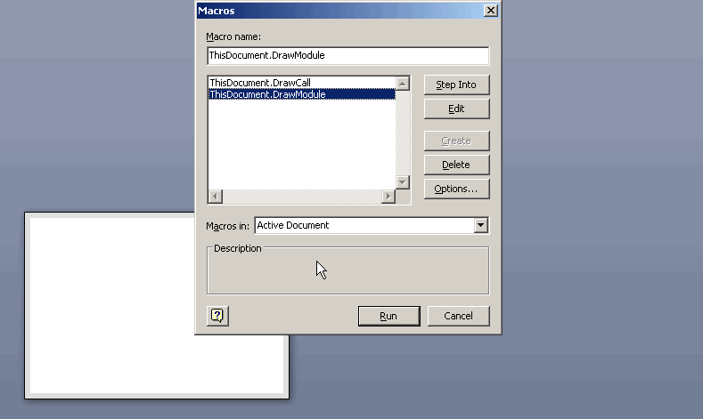
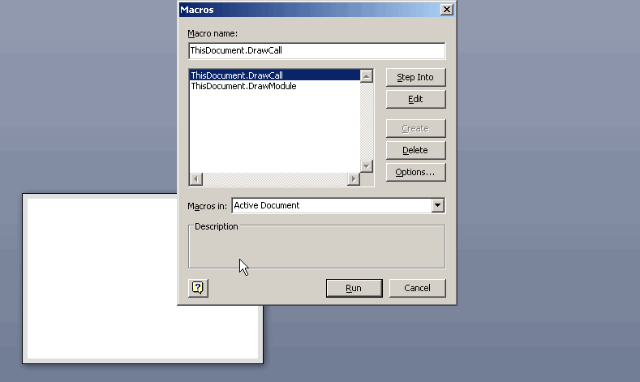

Есть у шейпа такой метод - AutoConnect. С его помощью один шейп присоединяет к себе другой.
Метод принимает также параметр, с помощью которого можно задать направление размещения для присоединяемого шейпа. Раньше как-то не приходилось задумываться, насколько сильно влияние этого параметра на скорость работы. Но вот неожиданно такой случай подвернулся.
Была у меня программка, которая выводит в графическом виде структуру модулей проектов VBA (входимость и структуру вызовов). И вот, когда понадобилось проанализировать структуру довольно сложного проекта, был поражен ее медлительностью. Естественно, начал искать причину.
В результате обнаружилось, что наибольшее замедление дает вот этот оператор
Sh1.AutoConnect Sh2, visAutoConnectDirRight, mas
Когда-то я подумал, что схема должна располагаться слева направо, поэтому особо не задумываясь, выбрал параметр visAutoConnectDirRight. Причем размещение все равно получается не оптимальным, поэтому в конце оно еще раз приглаживается с помощью ActivePage.Layout.
В схеме чуть больше 280 процедур, даже и не скажешь, что это много. Но давайте сравним работу при двух значениях параметра.
280 раз выполняется вот такой цикл:
If (n1(i) <> n2(i)) And (n2(i) <> 0) Then
Set Sh1 = ActivePage.Shapes.ItemFromID(n2(i))
Set Sh2 = ActivePage.Shapes.ItemFromID(n1(i))
Sh1.AutoConnect Sh2, visAutoConnectDirRight, mas
'Sh1.AutoConnect Sh2, visAutoConnectDirNone, mas
End If
Сначала как было (используется visAutoConnectDirRight).

Потом как стало (используется visAutoConnectDirNone).

Сейчас-то, конечно, понятно, что при заданном направлении Visio приходится после каждого соединения перетаскивать шейп в нужное место. То есть размещение непрерывно рассчитывается, шейпы перемещаются. Во втором случае все соединяется по месту и только потом одним махом все пересчитывается.
В итоге схемы получаются одинаковыми, но скорость несравнима!
Вот такова цена одной строчки (или действия "не подумав").